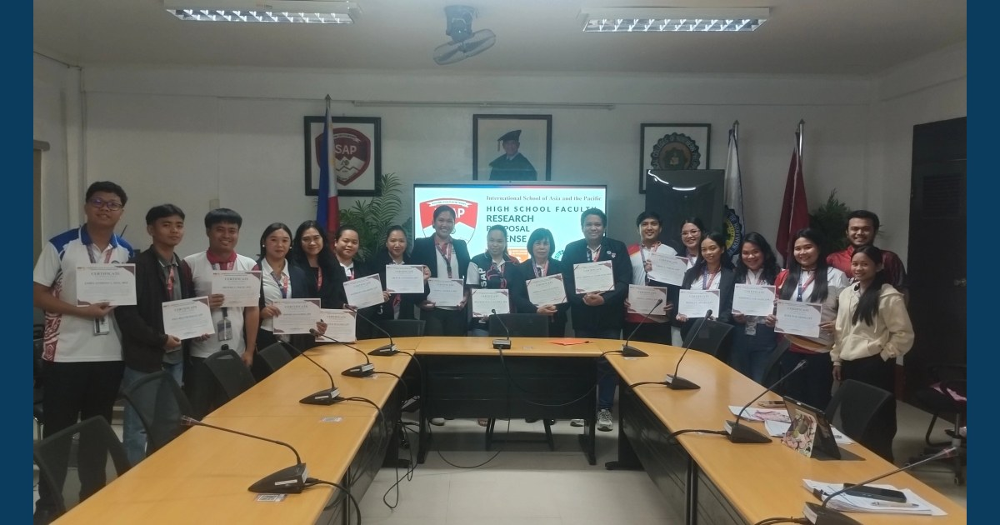

ISAP High School Faculty Strengthens Research Engagement Through Proposal Defense

ISAP and the MCNP–ISAP Research and Development Center conducted the High School Faculty Research Proposal Defense on November 20, 2026, at the institutional boardroom, supporting faculty research engagement and scholarly development.
Read full article